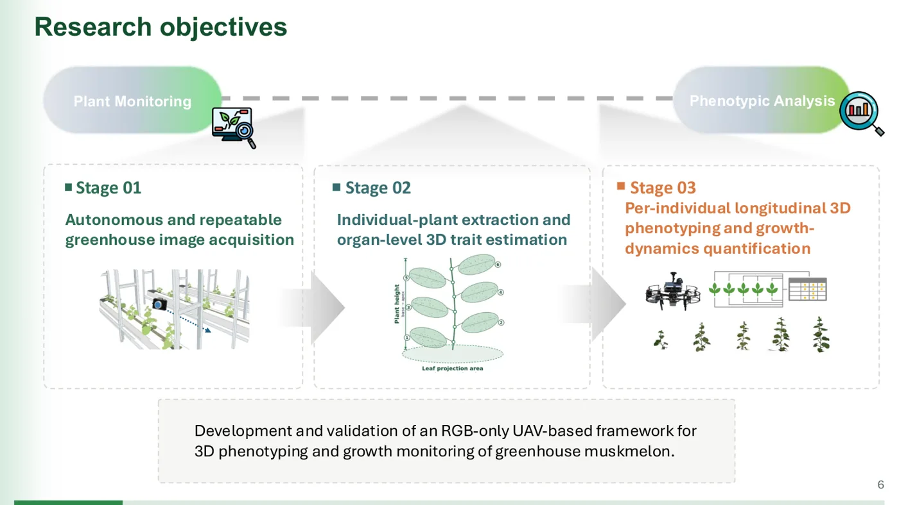
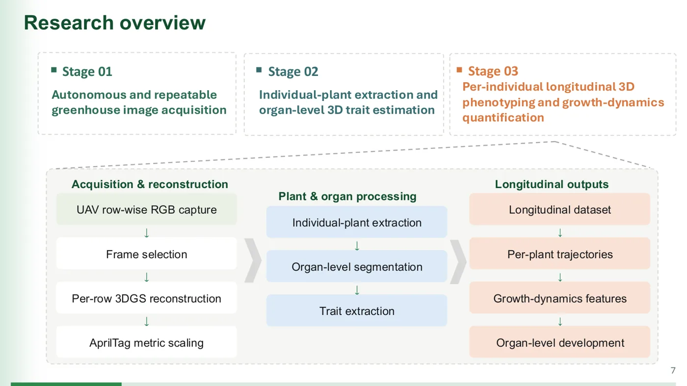
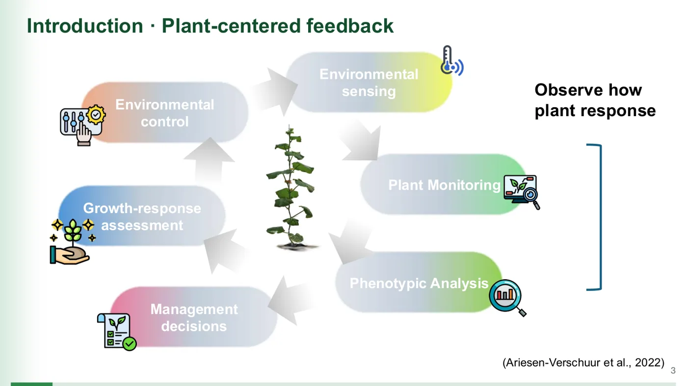
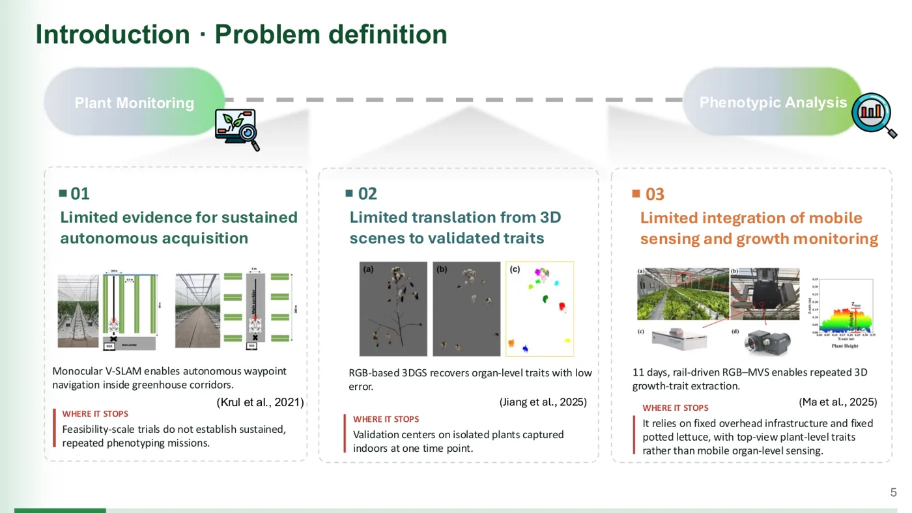
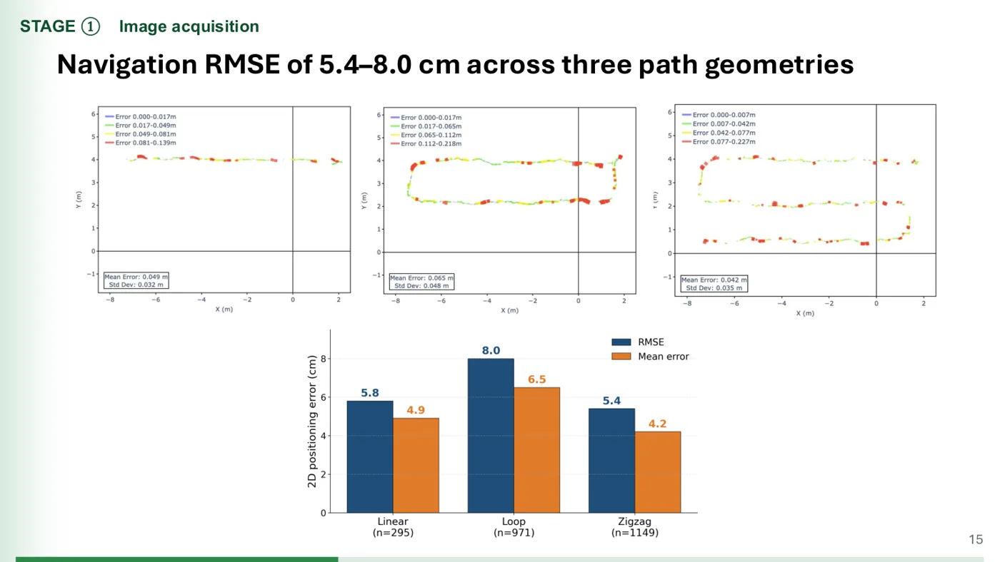
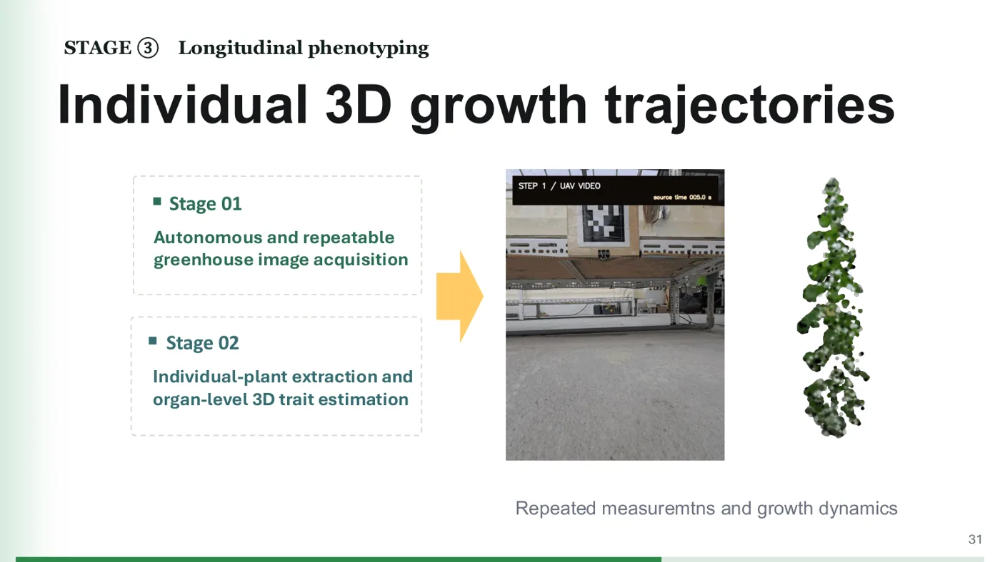
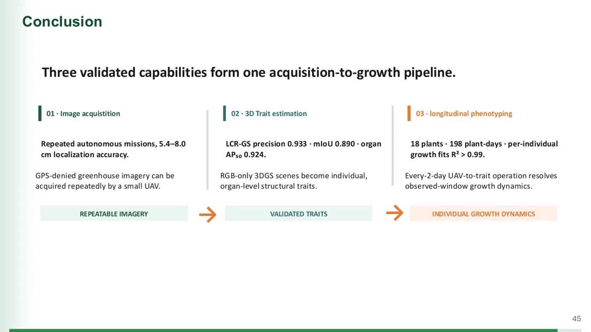
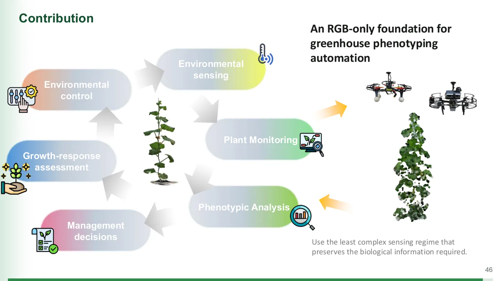

把多項工作串成一個故事
一份博士口試簡報的結構拆解
這是我 2026 年 7 月博士學位口試用的簡報（48 頁、40 分鐘），內容是溫室無人機與 3D 植物表型分析，三年、三篇論文的工作。主題跟軟體產品沒有關係，但「怎麼把很多件事串成一條線講」是通用的。這篇把結構拆開來，給要做 20 分鐘半年工作彙報的人參考。
一、整體配置：48 頁怎麼分
先看比例。開場加問題定義只用 8 頁，但那 8 頁決定了後面 40 頁的框架；主體三段各自獨立成章；收尾 4 頁把三段收回同一個框。
議程、題目
p.3–8
p.9–16
p.17–30
p.31–44
p.45–48
三段的頁數不平均，是刻意的：Stage 3 是這次最新、委員還沒看過的工作，所以給它最多篇幅和一個不同的顏色（橘色）。前兩段已經發表過，講到「夠讓人相信它能支撐第三段」就停。
二、骨架：一句話、三段、一條鏈
整份簡報只有一個骨架：一條「從取得影像到得出生長曲線」的流程鏈，切成三段。每一件工作都被放進鏈上的某個位置，沒有位置的工作就不出現。


三、開場三步：脈絡、缺口、目標
p.3 到 p.6 做的是同一件事的三個層次：先給一張大家都接受的全景圖，再放大到我做的那一段，指出那一段哪裡斷掉，最後宣告我要補哪三個洞。


WHERE IT STOPS 講它停在哪（一句）。關鍵技巧在 p.5 和 p.6 的對應：三個缺口和三個 Stage 是一對一的，而且版面位置完全一樣。缺口 01 在左欄，Stage 01 也在左欄。觀眾不用重新學一次地圖。
四、一個固定的視覺座標
整份簡報有幾個重複出現的元素，功能是讓觀眾隨時知道自己在地圖的哪裡：
- 每一頁左上角有
STAGE ② 3D Trait estimation這種標籤，從 p.10 到 p.44 沒有一頁漏掉。 - 每一頁底部有一條綠色進度條，隨頁數變長。觀眾知道還剩多少。
- 三欄版面在 p.5、p.6、p.7、p.45 重複出現。
- Stage 3 從 p.5 開始就是橘色，到 p.45 結論還是橘色。顏色不換，觀眾不用重新對應。
- p.3 的大迴圈圖在 p.46 原封不動再放一次，加上箭頭標出「這三年填了哪兩格」。
五、每一段內部的節奏
三段的內部結構是一樣的，照這個順序走：
以 Stage 1 為例：p.9 分隔頁、p.10–12 系統架構、p.13 真的在溫室裡飛的畫面、p.14–15 跟參考量測比對、最後落在「定位誤差 5.4–8.0 cm」這一個數字。這個數字在 p.45 結論會原樣再出現。
標題寫成結論句，不是主題

對照寫法：「Navigation validation」是主題，「Navigation RMSE of 5.4–8.0 cm」是結論。整份簡報的結果頁都用後者。
把段落接起來的那一頁

這一頁是整份簡報從「三件工作」變成「一個故事」的關鍵。沒有它，Stage 3 只是第三個題目；有了它，觀眾知道前面 30 頁都是為了這一段鋪路。
每一段只留一個數字
Stage 1 是 5.4–8.0 cm，Stage 2 是 precision 0.933 和 AP₅₀ 0.924，Stage 3 是 18 株、198 株日、R² > 0.99。中間其實有很多數字，但帶到結論的只有這幾個。
六、收尾：三個數字回到三個框


七、換算到 20 分鐘
48 頁對 40 分鐘，大約一頁 50 秒。20 分鐘用 20 到 24 頁，分配方式照同樣比例縮：
| 區塊 | 頁數 | 內容 |
|---|---|---|
| 開場 | 3–4 | 一張地圖、半年前卡在哪（三欄）、這半年做了哪三件（同三欄）、一句話主張 |
| 每一段 | 4–5 | 結論句標題的方法頁 1、證據頁 1–2、數字頁 1。分隔頁可以省，用標題顏色代替 |
| 串聯頁 | 1 | 明講哪個專案用了哪個專案的產出 |
| 收尾 | 2 | 三個數字回到三個框；地圖再放一次標出填了哪裡，加下半年要填哪裡 |
有兩個地方不要照抄。第一，這份簡報 p.22 到 p.27 有六頁方法細節，那是給口試委員看的，工作彙報的觀眾不需要，一頁帶過。第二，學術簡報不講「下一步要什麼資源」，工作彙報的最後一頁應該講。
八、可以直接抄的小東西
- 紅色
WHERE IT STOPS標籤：講現況時逼自己用一句話說出斷點。 - 右上角段落標籤和底部進度條：讓觀眾隨時知道在哪裡、還剩多少。
- 專有名詞第一次出現就給一行定義（p.21 對 PSNR 和 SSIM 的做法），之後不再解釋。
- 一頁表格講清楚規模（p.8：幾株、幾天、每幾天量一次）。觀眾在聽結果前要先知道樣本多大。
- 結論頁和目標頁用完全相同的版面，只換內容。